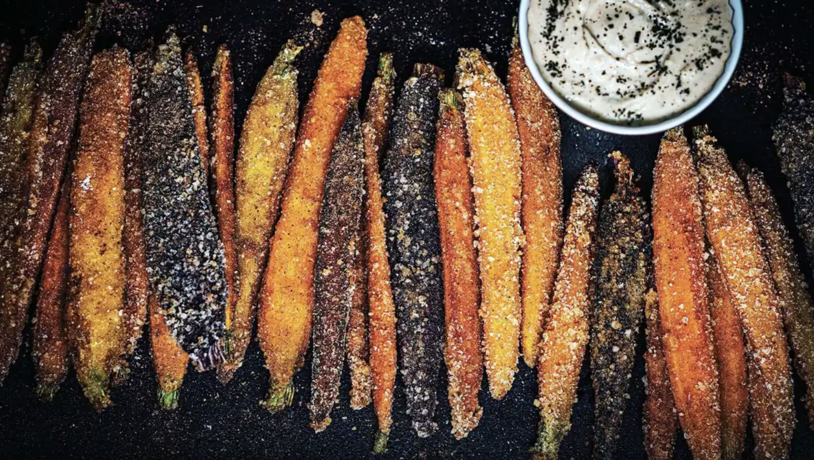

RELATED ARTICLES

The surprising connections between music and food
By Scottish Ensemble
Eating a meal together and sharing music together: two familiar experiences with a surprising amount in common. Ahead of Sound Bites, we take a deeper look at the connection between these functional, sensory and emotional experiences.
Read More

How sounds can influence our perception of taste
By Nik Sharma
Certain sounds can act as cues during cooking and give us an indication of how to proceed. When preparing the tadka, the crackling sound that arises when the mustard seeds sputter in the pan of hot oil indicate that the oil is hot enough to draw the flavors from the seeds; within a few seconds, that sound ceases and it’s time to take the pan off the heat.
Read More
The Relationship of Food and Music
By Allure of Sound
As you should understand, the encounter in a restaurant isn’t just-food. It is not with the kitchen and the tools like mixers they use. In fact, food is 50 percent of their encounter at a restaurant and the air is another huge portion of it. However, what is an adventure in a restaurant? It is the location, the décor, the waiting team along with… the audio. The previous part, songs, is the principal region of the air of a restaurant.
Read More
How the flavour changes depending on the music
By Dialbrodo
You are in the kitchen, the scent of dishes takes shape in the air and stimulates the appetite. Your dish is almost ready, and you can’t wait to taste it. But stop for a moment: have you ever tried to cook with the right musical background paying attention to how you perceive different tastes?
Read More